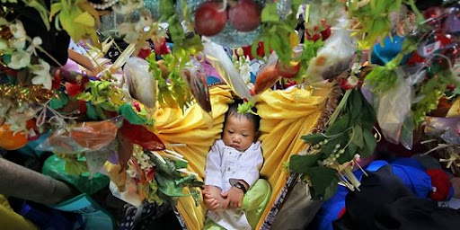
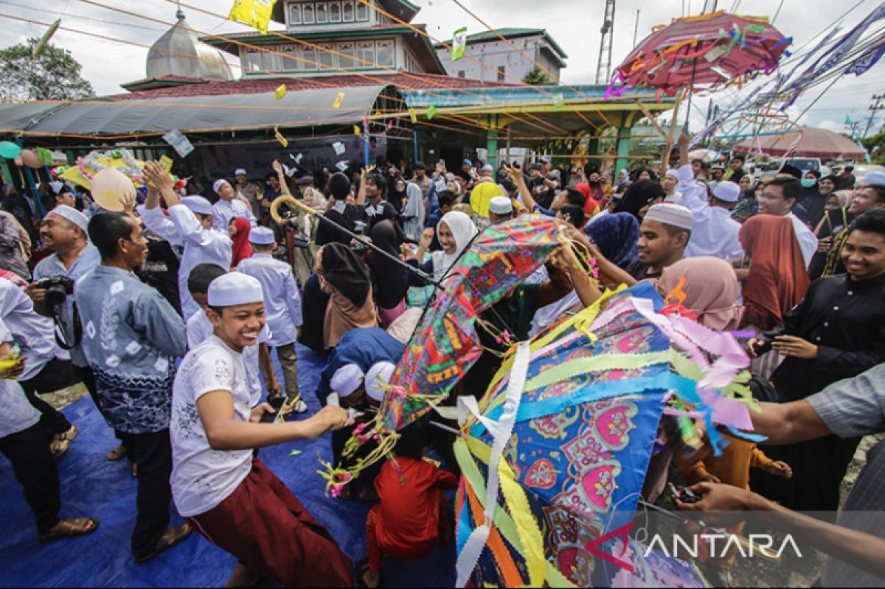
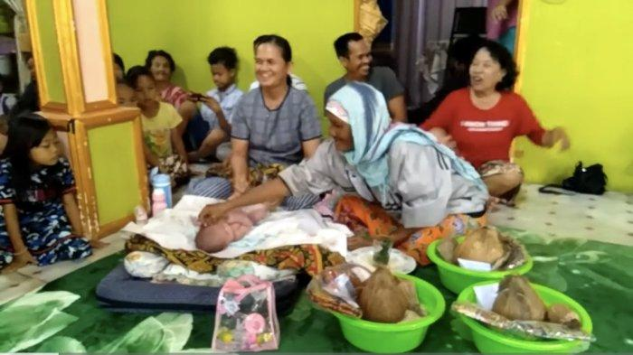
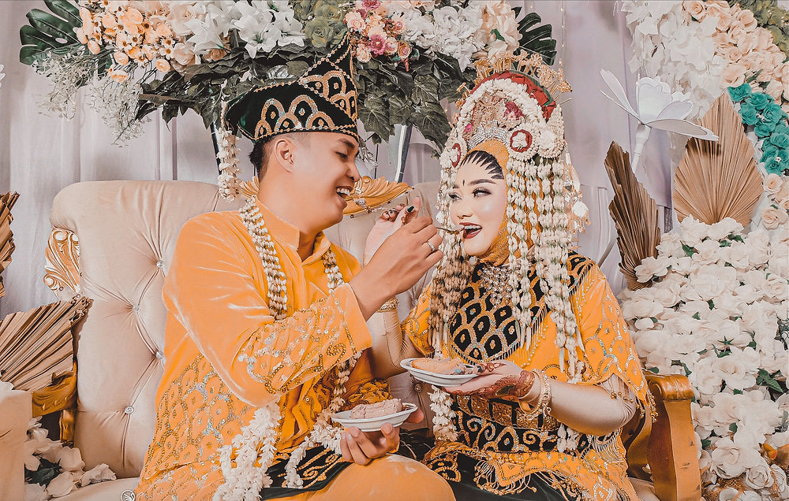

Adat Banjar
1. Baayun Anak
Baayun Anak adalah tradisi masyarakat Banjar untuk mensyukuri kelahiran anak. Upacara ini dilakukan dengan mengayun bayi di ayunan berhias kain warna-warni, diiringi pembacaan doa dan syair keagamaan. Tujuannya agar anak mendapat berkah, keselamatan, dan tumbuh menjadi pribadi yang baik.
2. Batumbang (Gotong Royong)
Batumbang adalah tradisi tolong-menolong dalam masyarakat Banjar, terutama saat membangun rumah, menggelar hajatan, atau acara besar lainnya. Tradisi ini menunjukkan rasa kebersamaan dan solidaritas tinggi antarwarga kampung.
3. Bapalas Bidan
Tradisi ini dilakukan sebagai bentuk ucapan terima kasih kepada bidan atau dukun beranak yang membantu proses persalinan. Biasanya diiringi doa dan pemberian hadiah atau makanan. Upacara ini juga dianggap sebagai bentuk penghormatan terhadap orang yang berjasa dalam kelahiran.
4. Bakawinan (Pernikahan Adat Banjar)
Pernikahan adat Banjar memiliki tahapan dan upacara yang khas, seperti badatang (melamar), bapapai (acara mandi pengantin dengan air bunga), dan bapinang (akad nikah dan resepsi). Setiap tahap memiliki makna simbolis tentang kesucian, doa restu, dan kebersamaan keluarga.